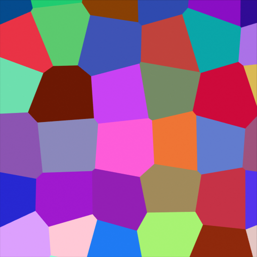
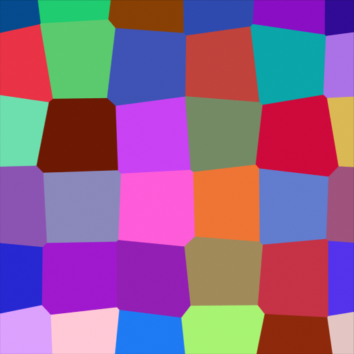
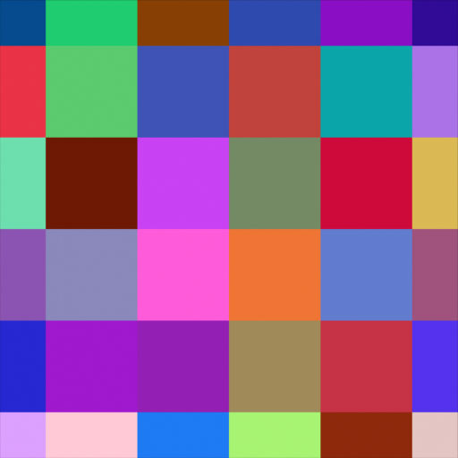
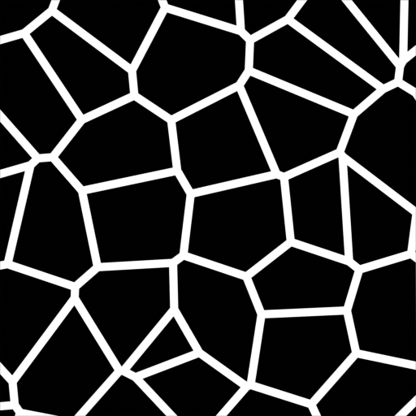
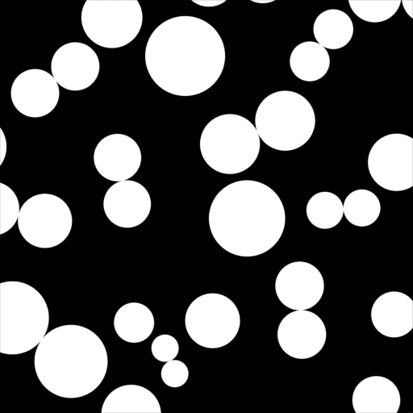

沃罗诺伊纹理着色器节点¶

沃罗诺伊纹理着色器节点。¶
沃罗诺伊纹理 节点在输入纹理坐标处评估 Worley噪波。
输入选项¶
输入是动态的，下面的输入端口会在选择的节点属性需要时出现。
- 矢量
Texture coordinate to evaluate the noise at; defaults to Generated texture coordinates if the socket is left unconnected.
- W
Texture coordinate to evaluate the noise at.
- 缩放
Scale of the noise.
- 平滑度
噪波的平滑度。

平滑度: 0.0.¶
平滑度: 0.25.¶

平滑度: 0.5.¶
平滑度: 1.0.¶
平滑度: 0.0.¶

平滑度: 0.25.¶
平滑度: 0.5.¶
平滑度: 1.0.¶
- 指数
闵可夫斯基距离度量指数。

指数: 0.5.¶

指数: 1.0.¶

指数: 2.0.¶

指数: 32.0.¶
- 随机性
噪波的随机性。

随机性: 1.0.¶
Randomness: 0.5.¶
Randomness: 0.25.¶
Randomness: 0.0.¶
属性¶
- 规格尺寸
用于计算噪波的空间维度。
- 1D
Evaluate the noise in 1D space at the input W.
- 2D
Evaluate the noise in 2D space at the input Vector. The Z component is ignored.
- 3D
Evaluate the noise in 3D space at the input Vector.
- 4D
Evaluate the noise in 4D space at the input Vector and the input W as the fourth dimension.
Higher dimensions corresponds to higher render time, so lower dimensions should be used unless higher dimensions are necessary.
- 特性
The Voronoi feature that the node will compute and return.
- F1
Compute and return the distance to the closest feature point as well as its position and color.
距离。¶
颜色。¶

位置。¶
- F2
Compute and return the distance to the second closest feature point as well as its position and color.

距离。¶

颜色。¶

位置。¶
- 平滑 F1
Compute and return a smooth version of F1.
距离。¶
颜色。¶

位置。¶
- Distance to Edge
Compute and return the distance to the edges of the Voronoi cells.

距离。¶
距离 < 0.05。¶
- N 球体半径
Compute and return the radius of the n-sphere inscribed in the Voronoi cells. In other words, it is half the distance between the closest feature point and the feature point closest to it.
The n-sphere radius can be used to create tightly packed n-spheres.¶
Node tree for the shader to the left.¶
- 间距度量
The distance metric used to compute the texture.
- 欧几里德
Use the Euclidean distance metric.
- 曼哈顿点距
Use the Manhattan distance metric.
- 切比雪夫
Use the Chebychev distance metric.
- 闵可夫斯基
Use the Minkowski distance metric. The Minkowski distance is a generalization of the aforementioned metrics with an Exponent as a parameter. Minkowski with an exponent of one is equivalent to the Manhattan distance metric. Minkowski with an exponent of two is equivalent to the Euclidean distance metric. Minkowski with an infinite exponent is equivalent to the Chebychev distance metric.
闵可夫斯基指数: 0.5(闵可夫斯基 1/2)。¶
闵可夫斯基指数: 1.0(曼哈顿)。¶
闵可夫斯基指数: 2.0(欧几里得)。¶
闵可夫斯基指数: 32.0(切比雪夫近似)。¶
输出选项¶
- 距离
距离。
- 颜色
单元格颜色。颜色是任意的。
- 位置
特征点的位置。
- W
特征点的位置。
- 半径
N维球面半径。
注意事项¶
In some configurations of the node, especially for low values of Randomness, rendering artifacts may occur. This happens due to the same reasons described in the Notes section in the White Noise Texture page and can be fixed in a similar manner as described there.